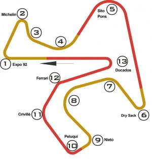

Longitud de la pista: 4,42 Kilometros
Anchura de la pista: 11 metros
Fecha: 27 abril
Hora: 14:00
Número de vueltas: 25
Localidad: Jerez
País: España
Patrocinador: Estrella Galicia 0.0

Alex Marquez - Tiempo: 00:40:56:374